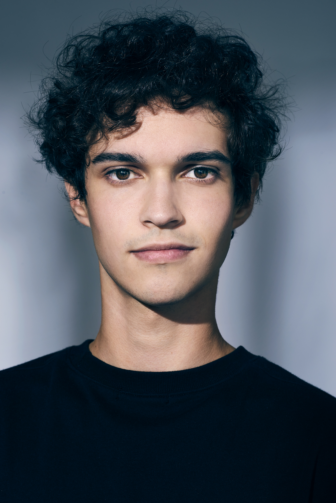
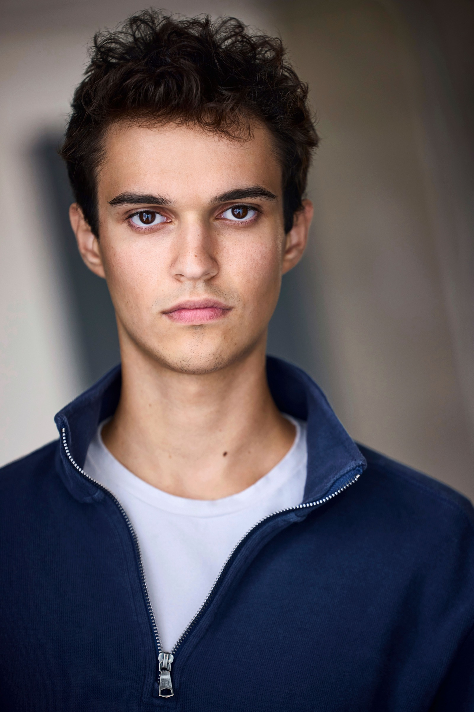
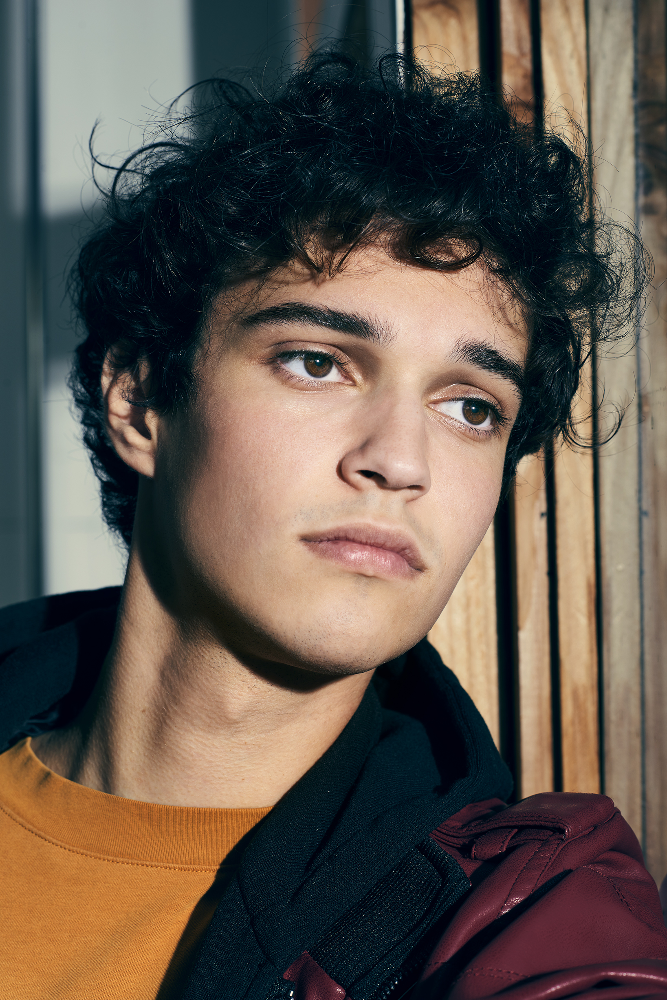

The Playground: Acting Classes
Acting for camera - 4 years
Gayla GoehlGary Spatz
Screen, stage, and commercial performer with a grounded dramatic presence, sharp comic timing, skilled in acting, improv, dance, singing, guitar, and the drums.



Video
A movement-forward reel featuring choreography, performance presence, and camera-ready dance work.
Experience
Acting for camera - 4 years
Gayla GoehlIntermediate Improv - 1 year
Sean HoganMeisner training - 2 years
John RuskinHigh School Theater - 4 years
Davida Wills-HurwinDance Training - 3 years
Jae LeeRepresentation
Horizon Talent Management - Commercial